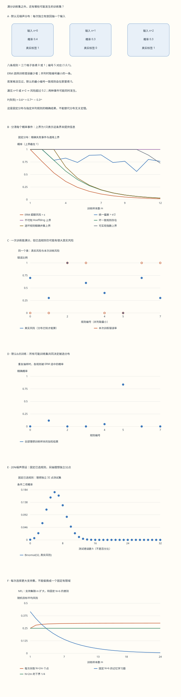

本页目录
统计学习 I · PAC 框架与有限假设类
前置：有限概率空间、条件概率、独立抽样、并集界与 Hoeffding 不等式（hdp-01）。本页目标：能说清泛化保证在对什么取概率，能完整证明有限类的两条充分样本量界，并能区分有限域与无限域上的“没有免费午餐”。
1. 先看一个会误导人的满分
训练六次都答对，究竟说明了多少？
设机器只会遇到三种输入：\(x=0,1,2\)，概率依次是 \(0.4,0.3,0.3\)。真实标签依次为 \(1,0,1\)。我们允许它从全部八条二分类规则中挑一条；每条规则就是一张三格真值表。它选择训练错误最少的规则；并列时，取编号最小的那条。
暂时不加标签噪声。不管抽到什么训练样本，总有真实规则能拿满分，所以 ERM 的训练错误始终为零。可是，如果没有见到 \(x=0\)，它可能不知道第一格该填 \(1\)；没有见到 \(x=2\)，第三格也可能填错。训练满分只回答已经抽到的格子，没有自动补上未见的格子。
本页把三个问题分别算清：
- 一条确定规则面对未来数据的错误比例是多少？这是真实风险。
- 重新抽一整份训练集后，学习器选出坏规则的概率是多少？这是学习失败概率。
- 一个只知道规则数、容许误差和信心水平的定理，最多能保证什么？这是分布无关的上界。
实验中的分布刻意设为已知，方便我们计算真实答案。实际学习任务通常不知道这个分布；定理的用途恰好是不用先知道它。
2. 写清风险、基准与两个概率层次
一次带标签观测为 \(Z=(X,Y)\)，服从分布 \(\mathcal D\)。对一条规则 \(h\)，损失为 \(\ell(h,Z)=\mathbf1\{h(X)\ne Y\}\)。真实风险是 \(L_{\mathcal D}(h)=\mathbb E_{Z\sim\mathcal D}\ell(h,Z)\)；在训练集 \(S=(Z_1,\ldots,Z_m)\) 上，经验风险是 \(L_S(h)=m^{-1}\sum_{i=1}^m\ell(h,Z_i)\)。
先固定非空有限类 \(\mathcal H\)，令 \(H=|\mathcal H|\)。经验风险最小化为 \(\widehat h=A(S)\in\arg\min_{h\in\mathcal H}L_S(h)\)。并列规则也是算法定义的一部分，本实验约定取最小编号。类内最优风险记作 \(L^*=\min_{h\in\mathcal H}L_{\mathcal D}(h)\)；超额风险是 \(L_{\mathcal D}(\widehat h)-L^*\)。
这里有两层随机性。内层的 \(L_{\mathcal D}(h)\) 已经对未来一个观测平均；外层 \(\Pr_{S\sim\mathcal D^m}\) 再对整个训练集取概率，因为不同训练集会选出不同的 \(\widehat h\)。不要把二者混成“每条预测正确的概率至少 \(1-\delta\)”。
若 \(\mathcal H\) 只有一条总是答错的规则，则 \(L_{\mathcal D}(\widehat h)=L^*=1\)，超额风险仍是零。不可知 PAC 承诺接近类内最好规则；它没有承诺这个类本身够好。
3. PAC 的量词，哪些东西必须预先固定？
不可知 PAC 可学性要求：存在一个固定学习算法 \(A\) 和有限样本量函数 \(m_{\mathcal H}(\varepsilon,\delta)\)，使得对任意 \(\varepsilon,\delta\in(0,1)\)、任意分布 \(\mathcal D\)，任意 \(m\ge m_{\mathcal H}(\varepsilon,\delta)\)，都有
\(\varepsilon\) 限制输出规则离基准有多远，\(\delta\) 限制训练过程失手的概率。同一个样本量门槛要对所有允许的 \(\mathcal D\) 有效；它不能暗中依赖未知分布。分布无关不等于没有假设：本页仍要求训练数据独立同分布、损失有界、类预先固定。允许时间相关、分布漂移或看完数据才无限制地挑类，需要重新论证。
可实现情形另加 \(L^*=0\) 的前提；此时超额风险就是风险本身。不可知情形不要求有零风险规则，既容许标签噪声，也容许真规则没有包含在类内。“不可知”不是说无法推理，而是说不先保证类能完全解释数据。
以下写出的都是充分样本量上界，不是每个问题都必须付出的最小样本数。即使某条界大于现有样本量，也只能说这条界没有保证，不能推出学习一定失败。
4. 可实现有限类：把坏规则一条条排除
固定一个风险 \(r_h=L_{\mathcal D}(h)>\varepsilon\) 的坏规则。一次观测不揭穿它的概率是 \(1-r_h\)。独立抽 \(m\) 次，始终不犯错的概率恰好是 \((1-r_h)^m\)。即使输入重复抽到，独立观测的乘法仍然成立。
可实现时存在零风险规则，它以概率一在训练集上零错；因此任何 ERM 也零错。令 \(F=\{L_{\mathcal D}(\widehat h)>\varepsilon\}\)，\(B=\{\exists h:r_h>\varepsilon,\ L_S(h)=0\}\)。有 \(F\subseteq B\)，但并列选择可能让包含严格成立。继续用并集界：
\(\Pr(F)\le\Pr(B)\le\sum_{h:r_h>\varepsilon}(1-r_h)^m\le H(1-\varepsilon)^m\le He^{-m\varepsilon}\)。
最后一步由 \(\log(1-u)\le-u\)。于是 \(m\ge\lceil\log(H/\delta)/\varepsilon\rceil\) 足以使失败概率不超过 \(\delta\)。若表达式超过 \(1\)，概率界可截成 \(1\)；这不会把它变成精确概率。
推导中有三次可能损失精度：把指定 ERM 的失败换成“存在坏一致规则”；把多个事件的并集换成概率之和；把每条规则不同的风险都换成同一个门槛 \(\varepsilon\)。实验会逐项显示这些差距。定理故意只保留 \(H,\varepsilon,\delta\)，因此换到另一分布时仍能使用。
5. 不可知有限类：从同时接近推出选得接近
现在训练数据可能有噪声，没有哪条规则能保证零错。对于抽样前固定的一条 \(h\)，\(m\) 个损失是独立的 \([0,1]\) 随机变量。Hoeffding 给出 \(\Pr(|L_S(h)-L_{\mathcal D}(h)|>\varepsilon/2)\le2\exp(-m\varepsilon^2/2)\)。 对 \(H\) 条规则取并集界，统一偏差事件 \(U=\{\max_h|L_S(h)-L_{\mathcal D}(h)|>\varepsilon/2\}\) 满足 \(\Pr(U)\le2H\exp(-m\varepsilon^2/2)\)。
若 \(U\) 没有发生，取类内真实风险最优的 \(h^*\)，逐步得到
第一步与第三步用同时控制的偏差；中间一步只用 ERM 的定义。因此超额风险失败事件包含在 \(U\) 中。取 \(m\ge\lceil2\log(2H/\delta)/\varepsilon^2\rceil\) 就得到所需保证。
为何不能把 \(\widehat h\) 直接代进“预先固定规则”的 Hoeffding？因为 \(\widehat h\) 是用同一份样本选出来的，选择改变了相关性；单条规则的结论并未自动覆盖这种选择。统一收敛是一种足够的解决方法，独立保留测试、稳定性或其他方法也可能适用，不应写成只有并集界这一条路。
这里 \(1/\varepsilon\) 与 \(1/\varepsilon^2\) 比较的是不同前提下的一般保证。它不表示任何一点噪声都会使每个具体问题付出平方代价；有额外结构时可改进，\(H=1\) 的超额风险更始终为零。
6. 把概率空间缩到可以算完
实验定义 \(x=0,1,2\)，\(p_0=s/100\)，\(p_1=p_2=(100-s)/200\)，其中 \(s\) 是偏斜百分数。真实标签由编号 \(t\in\{0,\ldots,7\}\) 的三位二进制给出：最低位对应 \(x=0\)。候选类为编号 \(0,\ldots,H-1\)。例如 \(t=5\) 的预测依次是 \(1,0,1\)，不要把显示顺序误读成高位在前。
标签以概率 \(\eta=q/100\) 独立翻转。于是六个类别 \(j=2x+y\) 的概率为 \(p_j=P(X=x,Y=y)\)；它们都能写成整数除以 \(D=20000\)。若标签与真值相同，\(x=0\) 类别的分子是 \(2s(100-q)\)；\(x=1,2\) 类别的分子是 \((100-s)(100-q)\)。翻转类别把 \(100-q\) 换成 \(q\)。所有分子之和恰好为 \(20000\)。
类内每条规则的真实风险可以直接求和：\(r_h=\sum_jp_j\mathbf1\{h(x_j)\ne y_j\}\)。由于三个输入概率均正且 \(\eta<1/2\)，本实验可实现当且仅当 \(q=0\) 且 \(t<H\)。没有噪声但真规则在类外，依然可能不可实现。
一次有序训练序列含 \(m\) 个类别，共 \(6^m\) 种。但 ERM 只看六个类别的计数 \(\mathbf n=(n_0,\ldots,n_5)\)。同一计数对应 \(M(\mathbf n)=m!/\prod_jn_j!\) 个有序序列，其概率为 \(M(\mathbf n)\prod_jp_j^{n_j}\)。在 \(m=12\) 时只需 \(\binom{17}{5}=6188\) 行。压缩后各行不等概率；必须保留这个重数。
每行列出所有规则的训练错误数、并列后选中的规则和三个事件指标。再按上述概率加权求和，得到完整的失败概率。整数分子和 \(D^m\) 分母保留在下载中；小数只是显示近似。零概率行也保留，事件判定可定义在这些行上，但它们不会增加概率。约定 \(0^0=1\)，表示该类别没有出现时无需乘上它的概率。
7. 一个能手算的完整例子
回到默认分布 \((0.4,0.3,0.3)\)、真实规则 \(5\)、\(H=8\)、无噪声、\(\varepsilon=0.2\)。最小编号的零错规则会给所有未见输入填 \(0\)。因此只有没有见到真标签为 \(1\) 的 \(x=0\) 或 \(x=2\) 才会失败；错其中任一个就已超过 \(0.2\)。
用容斥，\(m\) 点训练的精确失败概率为 \(P(F)=0.6^m+0.7^m-0.3^m\)。 减去的 \(0.3^m\) 对应训练数据全部落在 \(x=1\)：此时两个“未见”事件同时发生，只应算一次。
\(m=6\) 时，\(P(F)=0.163576\)。训练风险每次都为零，但真实风险的期望为 \(0.4(0.6)^6+0.3(0.7)^6=0.0539571\)。这两个数不相等：一个问“超过门槛的概率”，另一个问“错误程度的平均”。
“存在坏一致规则”则只要三个输入中任意一个没见到就可能发生，概率为 \(0.6^6+2(0.7)^6-2(0.3)^6-0.4^6=0.2764\)。逐坏规则的精确并集上界为 \(0.287508\)；进一步粗化的 \(8e^{-1.2}\) 大于 \(1\)，截断后只能给 \(1\)。这些数满足证明要求的方向，但松紧差别很大。
增到 \(m=12\) 后，精确失败概率为 \(0.016017538096\)，而可实现指数上界约为 \(0.725744\)。取 \(\delta=0.1\) 时，通用充分样本量是 \(22\)；这个特定分布却已经在 \(12\) 点满足要求。它没有推翻定理，只说明通用保证没有利用这份分布的细节。
8. 一次轨迹、理想概率与保留测试
实验另给出一份由非零 uint32 种子生成的可复现训练轨迹，再生成 \(32\) 个保留测试观测。训练规则只由训练部分确定，测试部分不参与并列选择、调参或挑选预设。换种子会换这条轨迹；不会改变理想 i.i.d. 概率空间的精确失败概率。
这里的 xorshift32 是确定性伪随机序列，类别映射位于 \(2^{32}\) 个格点上，并非精确的理想独立抽样。课程把原始整数和映射结果全部列出，是为了让观察可复现；没有用一次轨迹证明 PAC 量词。
若真正独立地另取 \(32\) 个理想测试样本，并条件于已经选定的规则，其错误数满足 \(K\sim\operatorname{Binomial}(32,r_{\widehat h})\)，即 \(P(K=k)=\binom{32}{k}r_{\widehat h}^{\,k}(1-r_{\widehat h})^{32-k}\)。实验将 \(33\) 个可能值全部列出。\(r=0\) 或 \(r=1\) 时，概率分别集中在 \(k=0\) 或 \(k=32\)；不要用人为最小柱高把零概率画成正数。
一次测试错误率 \(K/32\) 是随机读数，不会自动等于真实风险。反复看测试结果再挑规则，会让“条件于已固定规则、测试独立”的前提失效；要额外保留新数据或处理选择带来的偏差。
9. 没有免费午餐：完整的有限样本论证
令输入域至少含 \(2m\) 个点。固定任意学习算法 \(A\)，允许它在类外输出预测，也允许额外的内部随机性。在其中 \(N=2m\) 个点上均匀抽样；先为每个点独立掷一次公平硬币，作为目标函数 \(f\) 的标签。之后所有训练与测试标签都由同一个 \(f\) 决定，不是每次观测重新翻标签，所以每个目标分布都可实现于全函数类。
给定训练中看到的输入及标签，任何未见点的标签仍是独立公平硬币。无论算法怎样猜，对随机目标平均的错误率都是 \(1/2\)。某个固定点在 \(m\) 次有放回抽样中未出现的概率为 \((1-1/N)^m\)。因此对随机目标、训练集和算法随机性共同平均， \(\mathbb E_{f,S,A}L_{\mathcal D_f}(A(S))\ge\frac12(1-1/N)^m\)。 “至少”是因为已见点也可能被算法答错；记住已见标签的算法在那里不会错，等号成立。
Bernoulli 不等式给 \((1-1/(2m))^m\ge1-m/(2m)=1/2\)，故上述平均至少为 \(1/4\)。有限多个目标函数的平均不大于最大值，于是存在一个固定目标 \(f\)，使 \(\mathbb E_{S,A}L_{\mathcal D_f}(A(S))\ge1/4\)。这个 \(f\) 可依赖算法和样本量，不能依赖已经实现的训练集；这正是先平均、再固定目标的作用。
再把期望下界变成失败概率。写 \(L=L_{\mathcal D_f}(A(S))\in[0,1]\)、\(p=P(L>1/8)\)。分事件估计得 \(\mathbb EL\le(1-p)/8+p=1/8+7p/8\)。结合 \(\mathbb EL\ge1/4\)，推出 \(p\ge1/7\)。这就得到：对任意算法、每个这样的 \(m\)，存在零最优风险的分布，使风险超过 \(1/8\) 的概率至少为 \(1/7\)。
实验还独立枚举 \(N=6,m=3\) 的全部 \(64\) 个目标与 \(6^3\) 个有序输入样本。对“记住已见标签，未见填零”的具体算法，平均风险恰为 \(\frac12(5/6)^3=125/432\)。这是可以逐项核对的有限见证；“任意算法”的量词由上面的条件概率证明承担。
10. 为什么有限域和无限域结论不同？
若输入域无限，全函数类允许在任意大的有限支持上任意标注。假设存在分布无关 PAC 样本量，固定 \(\varepsilon=\delta=1/8\)，再取任意超过门槛的 \(m\)。上节仍能选 \(2m\) 个点，找到失败概率至少 \(1/7>1/8\) 的分布，与保证矛盾。所以无限域上的全二分类函数类不具有这种分布无关 PAC 可学性。
若输入域固定为 \(N<\infty\) 个点，全函数类只有 \(2^N\) 条规则。可实现有限类定理给出充分样本量 \(\lceil(N\log2+\log(1/\delta))/\varepsilon\rceil\)；不可知情形也能用有限类定理。不能一边固定 \(N\)，一边对任意大的 \(m\) 继续使用 \(N\ge2m\)。
图中刻意放两条线。第一条每次随 \(m\) 另取支持大小 \(N=2m\)，随机目标平均风险保持不低于 \(1/4\)。第二条固定 \(N=6\)，记忆学习器的平均风险 \(\frac12(5/6)^m\) 趋于零。它们描述不同的问题族。
也不要从 NFL 推出“越复杂一定越差”。扩大类使类内最优风险不会升高，但对某个分布和算法，估计误差不必单调变大；我们得到的是一般保证中出现的复杂度代价。风险分解 \(L_{\mathcal D}(\widehat h)=L^*+[L_{\mathcal D}(\widehat h)-L^*]\) 是精确等式，单个任务如何取舍仍要看结构和数据。
11. 动手顺序与向后续课程的连接
先用“无噪声”与“12点训练”预设，核对第7节容斥公式。再加标签噪声，观察可实现界变为“不适用”，但不可知界仍有意义。然后比较“唯一规则也完全正确”与“唯一规则处处预测错”：超额风险都为零，实际风险相反。最后只改 \(\delta\) 或种子，检查哪些结果应当保持不变。
看计数表时，先挑一行手算重数和概率。例如默认 \(m=6\) 的计数 \([0,2,3,0,0,1]\) 表示 \(x=0\) 两次、\(x=1\) 三次、\(x=2\) 一次，概率为 \(\frac{6!}{2!3!1!}(0.4)^2(0.3)^4=0.07776\)。因为三个输入都见过，唯一一致规则是真规则 \(5\)。完整表中的分子共同使用分母 \(20000^6\)。
界中的 \(\log H\) 是对预先固定的有限候选集合计数。若模型由 \(d\) 个各有至多 \(2^b\) 种编码的参数确定，而且其余流程固定，输出规则数至多 \(2^{bd}\)，于是 \(\log H\le bd\log2\)。这给出一个可能很松的界；它不证明“每个参数固定付几个样本”，也没有解释具体过参数模型的泛化机制。无限类需要分析可区分的标注模式或其他结构，下一课的 VC 维由此进入。
本页有限类定理及 NFL 的教材定位见作者公开的 Understanding Machine Learning，§2.3、§4、§5.1。本页三点分布、精确计数实验和边界练习均显式给出模型，可脱离随机轨迹单独复算。
无脚本对照：六组固定记录保留全部理想训练计数与一次种子轨迹；二者不混同。

| 预设 | 精确ERM失败概率 | 统一偏差概率 | 本次训练风险 | 本次规则真实风险 | 本次32点测试风险 |
|---|---|---|---|---|---|
| realizable | 0.163576 | 0.88336 | 0 | 0 | 0 |
| twelve | 0.0160175381 | 0.7624631066 | 0 | 0 | 0 |
| one-sample | 1 | 1 | 0 | 0.7 | 0.65625 |
| noisy | 0.2101505209 | 0.9408184377 | 0.25 | 0.2 | 0.21875 |
| always-wrong | 0 | 0 | 1 | 1 | 1 |
| skewed | 0 | 0.5393647575 | 0 | 0 | 0 |
下载六组完整记录。包含所有计数行的整数分子、重数与事件、全部规则风险、扫描、uint32轨迹、理想二项分布及64目标NFL见证。小数是显示近似，概率证书中的整数分子与分母可独立核算。
12. 八个可核对的练习
1. 从满分反推保证？ 默认分布只训练一次，为什么训练风险必为零，而超过 \(0.2\) 的失败概率却为 \(1\)？
查看推导：列出一次样本的三种情况
若见到 \(x=0\)，最小一致规则是 \(h_1=(1,0,0)\)，风险 \(0.3\)；若见到 \(x=1\)，选 \(h_0=(0,0,0)\)，风险 \(0.7\)；若见到 \(x=2\)，选 \(h_4=(0,0,1)\)，风险 \(0.4\)。三种情形的训练错误都为零，真实风险却全大于 \(0.2\)。失败概率为 \(0.4+0.3+0.3=1\)；平均风险为 \(0.4(0.3)+0.3(0.7)+0.3(0.4)=0.45\)。概率与风险平均再次不同。
2. 为什么容斥减去 \(0.3^m\)？ 默认例的两种漏看事件是否独立？
查看推导：两个事件的交集
令 \(A_0\) 为没见过输入 \(0\)，\(A_2\) 为没见过输入 \(2\)。分别有 \(P(A_0)=0.6^m\)、\(P(A_2)=0.7^m\)。同时没见过这两者，意味着每次都抽到输入 \(1\)，故 \(P(A_0\cap A_2)=0.3^m\)，一般不等于 \(0.42^m\)。所以 \(P(A_0\cup A_2)=0.6^m+0.7^m-0.3^m\)。独立的是不同抽样时刻，不是由同一训练集定义的这两个事件。
3. 阈值等号应放哪边？ 取偏斜 \(s=80\)、无噪声、真实规则 \(6=(0,1,1)\)、\(\varepsilon=0.2\)，为什么本实验 ERM 的失败概率是零？
查看推导：严格大于与大于等于
最小编号一致规则把未见位置填 \(0\)。输入 \(0\) 的真标签已是 \(0\)，因此始终不会在那里错；最多把输入 \(1,2\) 的两个 \(1\) 漏掉，总风险不超过 \(0.1+0.1=0.2\)。本页失败事件定义为风险严格大于 \(\varepsilon\)，故概率为零。若改成大于等于，则所有训练都落在输入 \(0\) 的事件会贡献 \(0.8^m\)；不能在数值比较时随意替换关系符号。
4. 一行计数如何变成概率？ 对默认例的计数 \([0,2,3,0,0,1]\)，从有序序列数推导概率，并解释为何不能给所有计数行相同权重。
查看推导：先选位置，再乘概率
在六个位置选两个放类别 \(1\)，再从余下四个选三个放类别 \(2\)，最后一个放类别 \(5\)，共有 \(\binom62\binom43=60\) 种有序序列。每种概率为 \(0.4^2 0.3^4=0.001296\)，合计 \(0.07776\)。全部六次都为类别 \(1\) 的计数只有一种排列，概率为 \(0.4^6=0.004096\)。压缩计数没有抹掉样本的排列重数或类别概率。
5. 噪声为何改变真实风险？ 在独立对称翻转概率 \(\eta<1/2\) 下，令规则与原真标签不一致的输入概率为 \(d_h\)。证明 \(r_h=\eta+(1-2\eta)d_h\)。
查看推导：按是否同意原标签分两组
在规则同意原标签的 \(1-d_h\) 部分，只有翻转才错，贡献 \((1-d_h)\eta\)；在规则不同意的 \(d_h\) 部分，不翻转才错，贡献 \(d_h(1-\eta)\)。相加为 \(\eta+(1-2\eta)d_h\)。真规则在类内时达到最小风险 \(\eta\)；其余规则的超额风险是 \((1-2\eta)d_h\)。若真规则不在类内，应减去类内最小的 \(d_h\)，不能仍把基准强行设为 \(\eta\)。
6. 多一个数量级规则要多多少样本？ 暂不计取整，固定 \(\varepsilon,\delta\)，把 \(H\) 乘 \(10\)；再固定 \(H,\varepsilon\)，把 \(\delta\) 除以 \(10\)。
查看推导：对数项与取整的区别
两种操作都让相应对数增加 \(\log10\)。可实现充分样本量表达式增加 \(\log10/\varepsilon\)；不可知表达式增加 \(2\log10/\varepsilon^2\)。取整后实际整数差不必等于这些实数，但相差小于 \(1\)。这只比较两条通用充分界；在 \(H=1\) 的例子里，超额风险已经恒零，仍不能把公式差当必需代价。
7. 把期望下界变成失败概率下界。 已知 \(0\le L\le1\)、\(\mathbb EL\ge1/4\)，完整推出 \(P(L>1/8)\ge1/7\)。哪里用到了损失上界？
查看推导：对两个事件分别估计
设 \(p=P(L>1/8)\)。在补事件上 \(L\le1/8\)，在失败事件上 \(L\le1\)，所以 \(\mathbb EL\le(1-p)/8+p\)。因此 \(1/4\le1/8+7p/8\)，移项得 \(p\ge1/7\)。上界 \(1\) 防止极小概率的巨大损失单独撑起期望；若损失无界，这个推导不能照搬。
8. NFL 是否禁止在一个固定字典上学全部标签？ 字典固定为 \(N=100\) 个输入，全二分类函数类大小是多少？为什么不能拿“对每个 \(m\) 都选 \(2m\) 个点”证明它不可学？
查看推导：保持输入域固定
类大小是 \(2^{100}\)，仍是有限数。在可实现情形，\(m\ge\lceil(100\log2+\log(1/\delta))/\varepsilon\rceil\) 就有本页保证。当 \(m>50\) 时，字典已经放不下 \(2m\) 个互异输入，NFL 的该支持构造无法继续使用。无限域的不可学证明能对每个更大的 \(m\) 换取更大的支持；固定有限域不满足这个量词。这里没有要求样本覆盖全部输入，有限类保证控制的是分布加权风险。